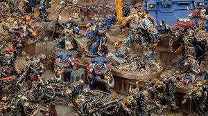
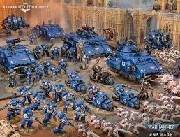
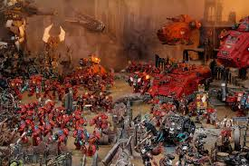

Warhammer 40,000 is a tabletop miniature wargame where players build armies of detailed model soldiers, creatures, and vehicles and battle against each other on a terrain-filled table. Set in a dark science-fiction universe, the game combines strategy, dice-based combat, and careful positioning of units to achieve objectives or defeat the opponent’s forces. Players collect, assemble, and paint their miniatures, making the hobby both a tactical game and a creative activity.

This is an image of a painted miniature from the Warhammer 40,000 universe. The intricate details and vibrant colors showcase the creativity and dedication of hobbyists who enjoy building and customizing their armies.

This is an image of a painted miniature from the Warhammer 40,000 universe. The intricate details and vibrant colors showcase the creativity and dedication of hobbyists who enjoy building and customizing their armies.

This is an image of a painted miniature from the Warhammer 40,000 universe. The intricate details and vibrant colors showcase the creativity and dedication of hobbyists who enjoy building and customizing their armies.
Warhammer 40,000 is a tabletop miniature wargame set in a dark science-fiction universe. Players build armies of detailed model soldiers, creatures, and vehicles and battle against each other on a terrain-filled table.
To get started, you can visit a local game store that sells Warhammer 40,000 products. They often have starter sets that include miniatures, rulebooks, and dice to help you learn the game. You can also find online tutorials and communities to connect with other players.
Yes, there are solo rules and scenarios available for Warhammer 40,000. Many players enjoy playing solo to practice their strategies, test new army builds, or simply enjoy the hobby without needing an opponent.